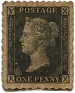
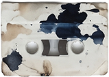
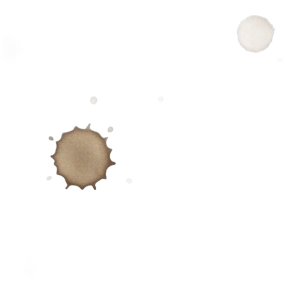
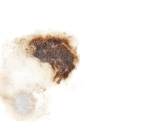
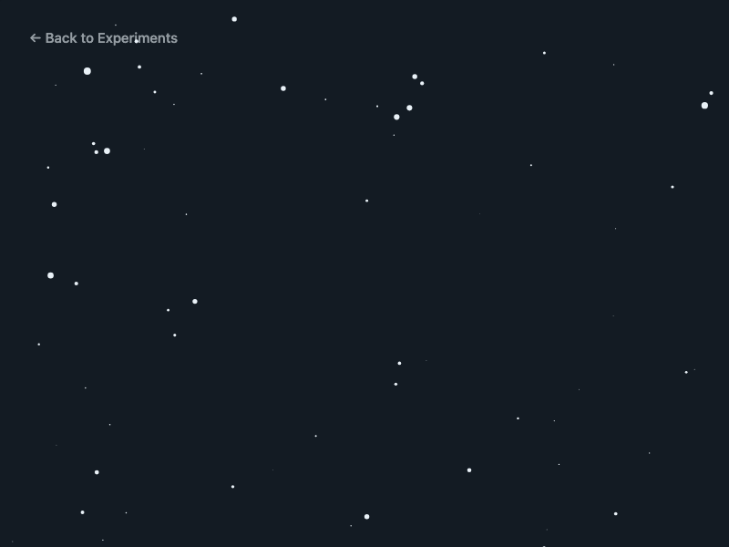

Starfield
for (let s of stars) {
// Move star closer
s.z -= speed;
// Reset if it passes the camera
if (s.z <= 0) {
s.z = width;
s.x = random(-width, width);
s.y = random(-height, height);
}
// Project 3D → 2D
// dividing by z gives perspective
let sx = map(s.x / s.z,
0, 1, 0, width);
let sy = map(s.y / s.z,
0, 1, 0, height);
// Size scales up as star
// gets closer (small z = big)
let r = map(s.z, 0, width, 10, 0.5);
ellipse(sx, sy, r, r);
}

Un champ d'étoiles en perspective 3D simulée — l'effet « warp speed ».
500 étoiles ont chacune une coordonnée x, y et z (profondeur). À chaque frame, s.z -= speed rapproche l'étoile de la caméra.
La projection 3D → 2D se fait en divisant par z : s.x / s.z. Plus z est petit, plus l'étoile est projetée loin du centre — c'est ce qui crée l'illusion de profondeur.
La position horizontale de la souris contrôle la vitesse de défilement via map(mouseX, 0, width, 1, 30). Quand une étoile atteint z ≤ 0, elle est réinitialisée au fond.